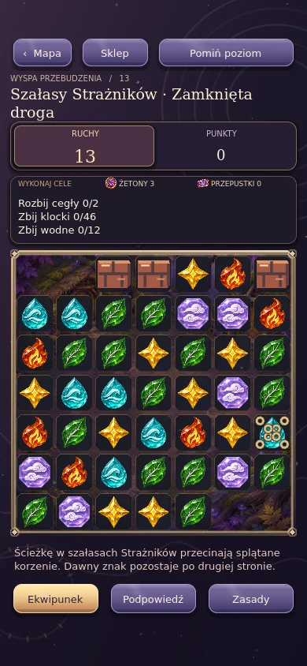
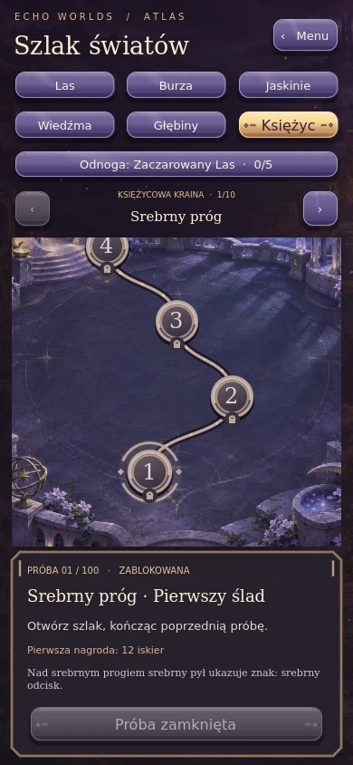
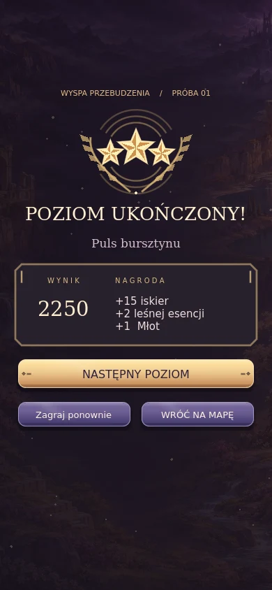
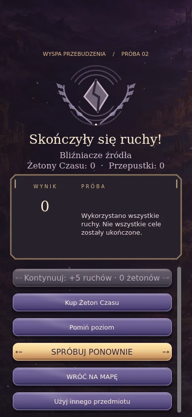

Puzzle First / gra match-3
ECHO WORLDS
Jedno połączenie.
Sześć krain.
Uruchom kaskadę i odkryj kolejną część świata.
Zamieniaj sąsiednie runy, realizuj cele i planuj każdy ruch. ECHO WORLDS ma autorską oprawę fantasy, przeszkody, boostery oraz lokalną progresję.
Match-3 Alpha — prace wstrzymane
- 600poziomów kampanii w kodzie
- 6krain match-3
- 60nazwanych lokacji


Od pierwszego kroku
Jeden spójny przebieg.
- Wybierz próbę
- Zamień runy
- Wykonaj cele
- Odkryj kolejną lokację
ECHO WORLDS
Każda zamiana ma znaczenie.
Dopasowanie trzech run uruchamia usuwanie i kaskady. Próby mają ograniczoną liczbę ruchów, cele i przeszkody. Liczniki wynikają z rzeczywistego stanu planszy, a nie z animacji prezentacji.
ECHO WORLDS
Sześć krain. Czytelna ścieżka.
Aktualny katalog zawiera po 100 poziomów w każdej z sześciu krain: od Wyspy Przebudzenia i Wyspy Burz po Jaskinie Echa, Krainę Wiedźmy, Zatopioną Krainę i Księżycową Krainę. To kampania match-3, a nie sześć obszarów eksploracji 3D.

ECHO WORLDS
Wynik, który zamyka próbę.
Osobne ekrany pokazują zwycięstwo albo koniec ruchów. Postęp, nagrody i możliwość kontynuacji wynikają z istniejących reguł gry. Materiały przedstawiają autentyczne ekrany testowych profili.

Bez fikcyjnego interfejsu
Rzeczywisty produkt. Z bliska.
Wybierz ekran, aby obejrzeć go w pełnym rozmiarze. Każdy materiał zachowuje opis środowiska i daty.




Nagranie aplikacji
Tak wygląda rozgrywka.
Archiwalny gameplay Android ze Sprintu 004 B. Pokazuje wcześniejszy wariant zasad; aktualną kampanię 0.10.0 przedstawiają zrzuty powyżej.
Pod powierzchnią
Technologia ma tu swoje zadanie.
Aplikacja i interfejs
Godot 4.6.3 · GDScript · Android
Dane i zapis
JSON
Potwierdzony zakres, źródła i ograniczenia
Opis projektu
Wstrzymana gra logiczna Puzzle First z mechaniką match-3. Lokalny preview 0.10.0 Alpha obejmuje sześć krain i 600 poziomów głównych; nie jest publicznym wydaniem.
Problem i rozwiązanie
Zapewnić przemyślaną podróż match-3 z różnymi krainami, celami i stopniowym odkrywaniem kampanii.
Godot prowadzi kampanię match-3 z ograniczoną liczbą ruchów, celami planszy i zapisem progresji. Oddzielne ekrany zwycięstwa i porażki pokazują wynik próby.
Rozwijać autorski produkt z lokalnym postępem i uczciwie opisanym zakresem.
Platformy i dostępność
Android
Istniejący lokalny APK preview 0.10.0 Alpha oraz źródła Godot.
Raport eksportu Sprint 013: podpis, manifest i zawartość APK sprawdzone 24.11.2026.
Wyłącznie lokalny preview; publiczne wydanie niepotwierdzone.
Brak nowego odbioru fizycznego Androida w tym audycie; prace wstrzymane.
Godot / Linux
Uruchamialny projekt i sceny kampanii, planszy oraz wyniku.
Zapisane regresje i rendery Sprint 013, bez powtórzenia 25.11.2026.
Źródła i lokalne materiały testowe.
Nie deklaruje gotowego publicznego wydania PC.
Weryfikacja z datą i środowiskiem
- PASS · 2026-11-24
Sprint 013 — sześć krain i 600 prób
Zapisane dowody produktu; ponownie odczytane podczas audytu
41 zestawów i 39 369 asercji Godot według zachowanego raportu; brak nowego testu podczas audytu.
Źródło wyniku - NOT RUN · 2026-11-24
Kod oraz istniejące materiały z profili testowych.
Linux, odczyt lokalny
Nie uruchamiano nowej sesji rozgrywki w ramach inwentaryzacji marketingowej.
Źródło wyniku - NOT RUN · 2026-11-25
Aktualizacja inwentarza i granic gotowości
Lokalny audyt kodu, dokumentacji i istniejących artefaktów
Nie uruchamiano produktu, nowego builda ani urządzenia. Zachowane wyniki mają własną datę i zakres.
Źródło wyniku
Funkcje w katalogu
- Mechanika match-3: zamiana sąsiednich elementów, dopasowania, cele planszy i ograniczona liczba ruchów.
- Sześć krain po 100 poziomów głównych i atlas 60 lokacji; próby poboczne pozostają osobno.
- Sekwencja Puzzle First prowadzi przez wybór próby, rozgrywkę i odrębne ekrany zwycięstwa lub porażki.
- Lokalny zapis progresji, ukończeń, gwiazdek, aktywnej planszy i ekwipunku.
- Istniejące materiały świata, plansz i rzeczywisty gameplay pochodzą z rozwijanego projektu Godot.
Architektura
- Godot i GDScript: silnik planszy match-3, atlas, interfejs i zapis lokalnego postępu.
- Kampania sześciu krain obejmuje po 100 prób: 24 oryginalne definicje i 576 rozszerzonych. Próby poboczne są oddzielne.
- Zapis zachowuje ukończenia, gwiazdki, ekwipunek i aktywną planszę.
- Kod zaplecza i testy mechanik konta lub płatności nie oznaczają produkcyjnej integracji sklepowej.
Zakres weryfikacji
- Sprint 013 z 24.11.2026 deklaruje preview 0.10.0 (21), 600 poziomów głównych i 60 lokacji.
- Zapisany raport QA obejmuje 41 zestawów Godot i 39 369 asercji; są to dowody z 24.11, nie nowa regresja tego audytu.
- Decyzja właściciela: prace wstrzymane. Brak publikacji i produkcyjnego uruchomienia płatności.
Źródła katalogu
- ECHO WORLDS — przegląd źródeł i materiałów
Inwentaryzacja rzeczywistego katalogu treści, kodu interakcji i zapisanych renderów. Bez nowego testu Androida.
- ECHO WORLDS — audyt ekosystemu 25.11.2026
project.godot i Sprint 013: sześć krain, 600 poziomów głównych; stan wstrzymania prac według decyzji właściciela. Odczyt źródeł i zapisanych dowodów; bez nowego builda lub testu produktu.
Aktualny stan / 2026-11-25
ECHO WORLDS
Prace są wstrzymane. Kod wskazuje 0.10.0 Alpha, później niż historyczne 0.5.0. Gra nie jest przedstawiana jako publicznie wydana; konfiguracja i produkcyjna akceptacja płatności pozostają odrębne.
Kod i lokalny APK preview 0.10.0 Alpha istnieją. Prace są wstrzymane; brak potwierdzonego publicznego wydania.
Co pozostaje do ukończenia
- Projekt pozostaje wstrzymany.
- Publiczna dystrybucja i produkcyjne płatności nie zostały potwierdzone.
- Testy lokalnych scenariuszy lub zaplecza nie są końcowym odbiorem sklepu ani fizycznych urządzeń.